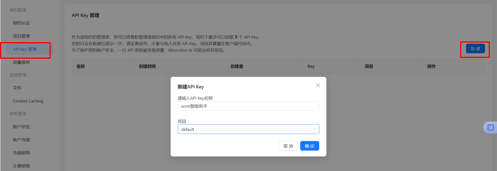
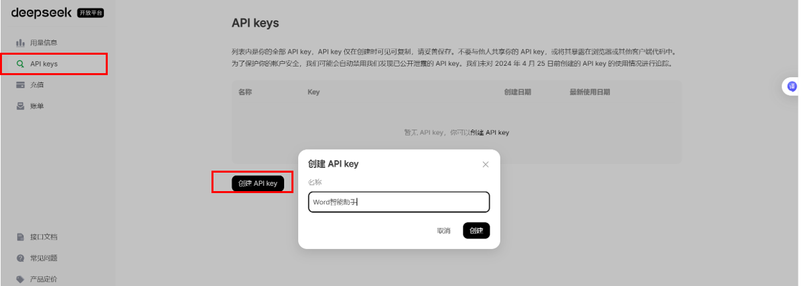
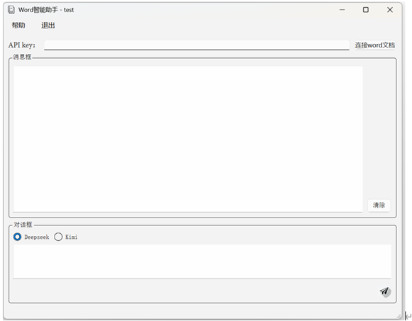
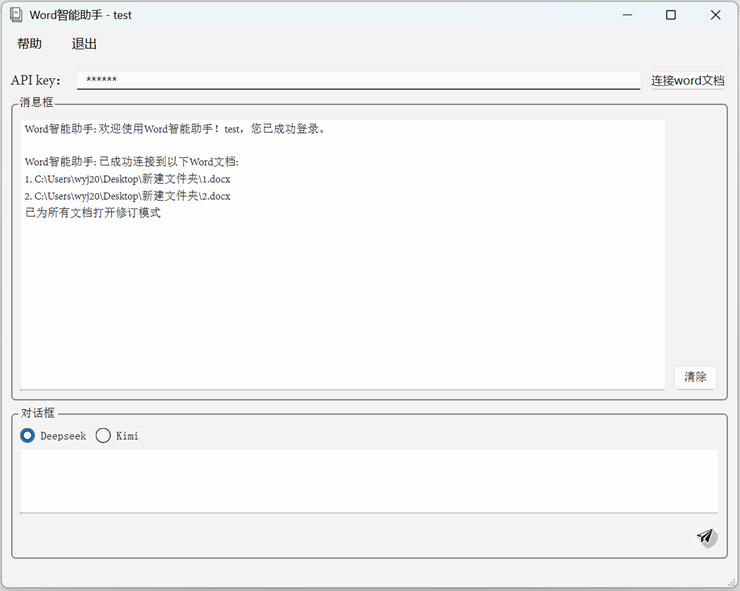
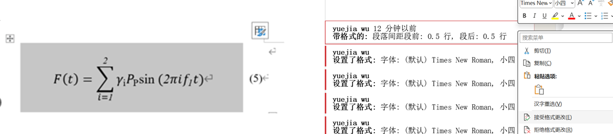
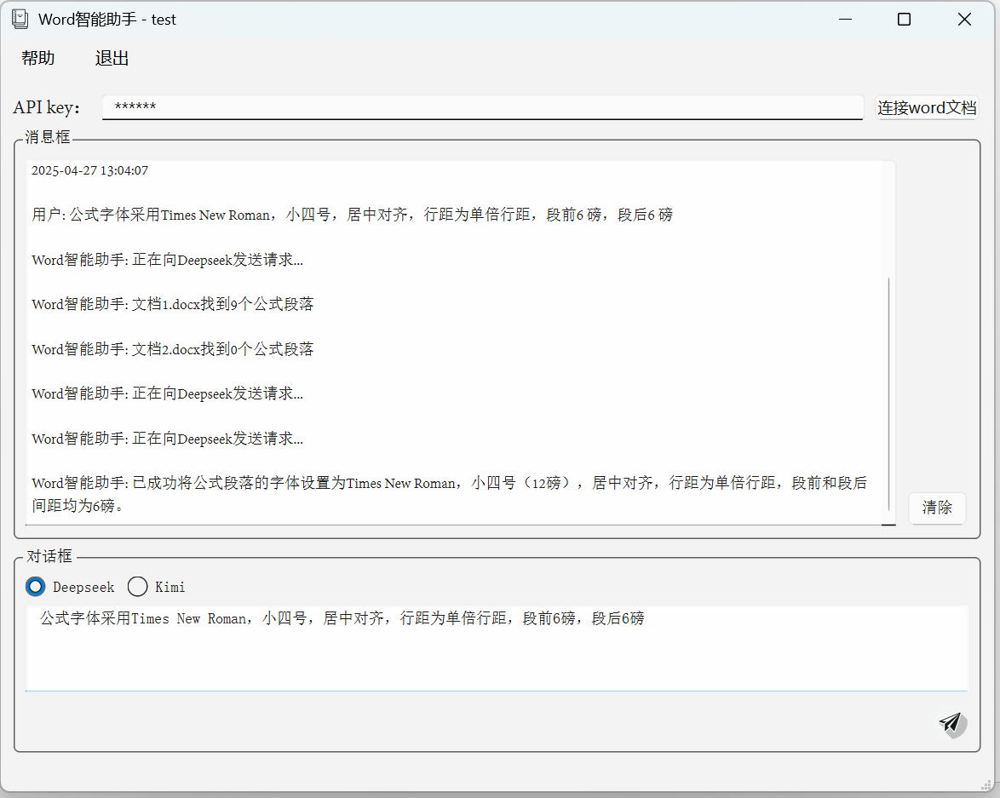
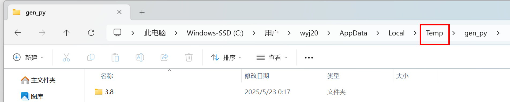

Word文档智能助手 - 用户手册
1.1 关于开发这款软件的目的
基于AI大模型的Word文档智能助手软件是一款专为提升文档处理效率而设计的创新型软件，它融合了先进的人工智能技术与传统文档处理工具的优势。在当今信息爆炸的时代，专业人士、学者和企业每天都需要处理大量的Word文档，从格式调整到内容编辑，耗费了大量宝贵的时间和精力。
本软件通过调用当今时代先进的AI大语言模型技术，能够准确理解用户的自然语言指令，并自动执行各种复杂的文档处理任务。它不仅能够批量处理多个文档，还能根据用户需求自动调整文档格式、识别公式段落、设置页面属性等，大幅减少了手动操作的繁琐步骤。
与传统文档处理工具不同，基于AI大模型的Word文档智能助手软件采用了人机协作的交互模式，用户只需用自然语言描述需求，系统便能理解并精确执行，用户无需学习复杂的Word文档操作步骤，这种直观的交互方式使得即使是缺乏Word文档操作技能的用户也能轻松完成高质量的文档处理工作。
1.2 操作步骤（必读）
1.2.1 获取AI大模型密钥
1.2.1.1 什么是AI大模型密钥以及为何需要它
AI大模型密钥是连接Word文档智能助手与Kimi或Deepseek AI 模型的“钥匙”，用于调用AI服务来理解您的指令。您需要为您选择的模型获取专属的密钥。
1.2.1.2 如何获取密钥
（一）获取 Kimi 密钥
- 浏览器打开 Kimi 开放平台官网：开始使用 Kimi API - Moonshot AI 开放平台
- 点击右上角“用户中心”
Kimi 用户中心按钮 - 登录后点击左边栏的“API Key管理”，再点击“新建”，输入相应的内容后点击“确定”
 Kimi API Key 管理界面 - 立即复制生成的密钥，并妥善安全保存。
- Kimi通常会赠送15元的免费额度，当免费额度用完后，后续密钥将按照其官方网站上公布的实时定价标准进行收费（每用一次几分钱而已，很便宜的）
（二）获取 Deepseek 密钥
- 浏览器打开Deepseek官网：DeepSeek | 深度求索
- 点击右上角“API开放平台”

Deepseek API 平台按钮 - 登录后点击左边栏的“API Key”，再点击“创建API key”，输入相应的内容后点击“创建”
 Deepseek API Key 创建界面 - 立即复制生成的密钥，并妥善安全保存。
- Deepseek不会赠送免费额度，需自行充值（每用一次几分钱而已，很便宜的）
（三）Kimi和Deepseek 比较
Kimi 平台通常会为新用户提供 15 元的免费 API 调用额度，方便您初次体验。不过，请注意，在处理某些特别复杂或多步骤的 Word 操作指令时，根据反馈 Kimi 模型偶尔可能未能完全按照您的预期执行。如果您在使用过程中希望获得更平稳、一致的自动化体验，或者遇到了类似指令执行不准确的情况，我们建议您可以优先尝试使用 Deepseek 平台的 API Key，它在指令理解和执行的稳定性方面可能表现更为可靠。
1.2.2 登录
启动软件，弹出基于AI大模型的Word文档智能助手软件授权与登录界面，见图1。
输入账号密码，点击登录进入软件界面。
1.2.3 软件用法
- 登录成功进入主界面，软件主界面包括菜单栏、消息框与对话框页面，如图2。
 图2 软件界面 - 先在“API key”右侧的输入框中输入获取到的AI大模型密钥。
- 然后点击按钮“连接word文档”，在弹出的窗口可选择一个或同时选择多个word文档进行批量化操作。当完成选择后，会弹出弹窗提示“是否继续选择更多文件”，点击“是”可继续选择更多文档，点击“否”则结束文档选择。连接成功后，软件会在消息框中显示已连接的文档路径，接下来输入的指令都会针对已选择的文档进行操作，如图3所示。若要重新选择或更换处理的文档，只需重新点击按钮"连接Word文档"即可。另外，系统会自动为每个选择的文档启用修订模式，用户可以看到AI所做的所有修改，根据个人需要选择性地接受或拒绝这些修改即可，如图4所示。
 图3 消息框中显示已连接的文档路径  图4 接受或拒绝格式更改 - 在完成以上操作后，在对话框顶部选择AI大模型Deepseek或Kimi（根据从哪个AI大模型获取到密钥进行选择），然后在对话框中输入指令，点击按钮“发送”（图标为右下角的纸飞机）将请求发送给AI大模型进行处理，处理过程将在上方的消息框中显示，如图5所示。每次操作都会应用到当前已连接的文档中。如需更换处理的文档，只需重新点击"连接Word文档"按钮即可。
 图5 处理过程
1.3 演示视频
示例1 设置标题格式
示例2 设置正文格式
示例3 将选中的表格设置为三线表
示例4 可同时操作两个及以上的word文档
1.4 常见问题及解决办法
少部分情况点击“连接 word 文档”按钮时会出现如下图的弹窗：
解决办法：
- 先关闭（Word智能助手）软件。
- 点击电脑桌面中的“此电脑”或“我的电脑”。
- 在地址栏中输入
%TEMP%\gen_py并按回车键，如下图所示：图Y：在地址栏输入路径 - （如果上一步直接打开了 `gen_py` 文件夹则跳过此步）如果第3步打开的是 `Temp` 文件夹，请在该文件夹中找到并打开名为 `gen_py` 的文件夹，如下图所示：
 图Z：在Temp文件夹中打开gen_py - 将 `gen_py` 文件夹**整个删除**（或者为了安全起见，可以先将其重命名为例如 `gen_py_old`）。
- 重新打开 Word 文档智能助手软件即可。
1.5 主要功能和提示词
建议尽量复制本手册中的提示词，并根据需要进行修改。这样可以确保操作成功执行，因为这些提示词是在调试程序过程中经过验证的，其他未验证的提示词可能无法达到预期效果。
1.5.1 设置页面格式
此功能用于调整Word文档的整体页面布局，包括纸张的大小、打印方向、页面内容的分栏数量以及上、下、左、右的页边距。
- 纸张大小：目前支持：“A3”、“A4”、“A5”。
- 纸张方向：支持“横向”、“纵向”。
- 分栏：将页面内容分成多栏显示，范围是 1 到 45 栏。
- 页边距：设置页面内容区域与纸张边缘之间的空白距离，单位支持厘米或磅。可以单独设置上、下、左、右四个方向的边距。
示例提示词：
提示词：设置页面为 A4 纸张，横向，分 2 栏，上下边距 2.5 厘米，左右边距 3 厘米。1.5.2 创建或修改样式
此功能可以在Word文档中批量创建新的段落样式，或者批量修改现有样式的属性。
- 创建新样式：如果您提供的样式名称在文档中不存在，此功能将自动创建一个新的段落样式。
- 修改现有样式：如果样式名称已存在，则会根据您提供的参数更新该样式的属性。未指定的属性将保持不变。
可以指定以下属性来创建或修改样式：
- 样式名称: 需要创建或修改的样式名称（例如：“论文正文”）。
- 字体大小：可以指定中文名称（如“五号”、“小四”）或具体的磅值（如“12磅”、“10.5磅”）。
- 字体样式：可以指定是否“加粗”或“斜体”。
- 字体名称：可以指定字体名称（如“宋体”、“黑体”、“Arial”）。也可以分别指定中文和英文字体（例如：“中文字体设为楷体，英文字体设为Times New Roman”/“新罗马”）。
- 段落对齐方式：支持“左对齐”、“居中对齐”、“右对齐”和“两端对齐”。
- 段落缩进：可以设置“首行缩进”（指定字符数，如“首行缩进2字符”）或“悬挂缩进”（指定字符数，如“悬挂缩进1.5字符”）。
- 段前/段后间距：可以指定以“行”为单位（例如：“段前1行”，“段后0.5行”）或以“磅”为单位（例如：“段前12磅”，“段后6磅”）。
- 行距：可以设置为 “单倍行距”、“1.5倍行距”或“双倍行距”；也可以设置为“固定值”，并同时指定一个磅值（例如：“设置行距为固定值20磅”）；还可以设置为“最小值”，并同时指定一个磅值（例如：“设置行距为最小值12磅”）；或者设置为“多倍行距”，并同时指定一个倍数（例如：“设置行距为1.25倍”）。
- 大纲级别：可以将段落设置为特定的标题级别（例如：“设为大纲级别1级”，“大纲级别2级”）。
示例提示词：
提示词1：创建名为“论文标题”的样式，设置字体为黑体三号加粗，段落居中，单倍行距，段前24磅，段后18磅，大纲级别1级。
提示词2：修改“正文”样式，将字体改为宋体小四，首行缩进2字符，固定行距23磅。
提示词3：批量创建样式：创建名为“论文标题”的样式，设置字体为黑体三号加粗，段落居中，单倍行距，段前24磅，段后18磅，大纲级别1级，并创建样式“代码块”，字体设为 Consolas 10磅 黑色，左对齐，单倍行距。1.5.3 段落处理
1.5.3.1 设置段落格式与字体
- 字体大小：可以指定中文名称（如“五号”、“小四”）或具体的磅值（如“12磅”、“10.5磅”）。
- 字体颜色：目前支持设置为“黑色”、“红色”、“蓝色”、“绿色”或“黄色”。
- 字体样式：可以指定是否“加粗”或“斜体”。
- 字体名称：可以指定字体名称（如“宋体”、“黑体”、“Arial”）。也可以分别指定中文和英文字体（例如：“中文字体设为楷体，英文字体设为Times New Roman”/“新罗马”）。
- 段落对齐方式：支持“左对齐”、“居中对齐”、“右对齐”和“两端对齐”。
- 段落缩进：可以设置“首行缩进”（指定字符数，如“首行缩进2字符”）或“悬挂缩进”（指定字符数，如“悬挂缩进1.5字符”）。
- 段前/段后间距：可以指定以“行”为单位（例如：“段前1行”，“段后0.5行”）或以“磅”为单位（例如：“段前12磅”，“段后6磅”）。
- 行距：可以设置为 “单倍行距”、“1.5倍行距”或“双倍行距”；也可以设置为“固定值”，并同时指定一个磅值（例如：“设置行距为固定值20磅”）；还可以设置为“最小值”，并同时指定一个磅值（例如：“设置行距为最小值12磅”）；或者设置为“多倍行距”，并同时指定一个倍数（例如：“设置行距为1.25倍”）。
- 大纲级别：可以将段落设置为特定的标题级别（例如：“设为大纲级别1级”，“大纲级别2级”），方便后续添加目录。
示例提示词：
指定段落序号：
提示词1：第七段和第八段的字体加粗，中文宋体，英文和数字用Times New Roman，五号，段落左对齐，首行缩进2字符，单倍行距，段前1 行，段后0.5行。设置含特定内容的段落：
提示词2：为含有“核电站建设”的段落设置字体为楷体，首行缩进2字符。效果：文档中所有含有“核电站建设”的段落都会设置成上述格式。
设置所有段落：
提示词3：将所有的段落设置中文宋体，英文和数字用Times New Roman，五号，设置行距为固定值20磅，段前24磅，段后6磅。1.5.3.2 设置段落样式
此功能允许将 Word 文档中预先定义好的段落样式（例如，“正文”、“标题 1”、“您自定义的样式”等）快速应用到指定的段落或当前选中的段落上。
应用的样式必须已经在当前 Word 文档的样式库中存在。如果样式不存在，您需要先在 Word 中创建该样式，提示词中的样式名必须与Word中显示的样式名完全一致。
示例提示词：
指定段落序号：
提示词1：将第 1 段设置为“标题 1”样式。
提示词2：为第 5 至第 8 段应用“标题 ”样式。设置含特定内容的段落：
提示词3：为含有“核电站建设”的段落设置“标题 1”样式。效果：文档中所有含有“核电站建设”的段落都会设置成上述格式。
设置所有段落：
提示词4：将所有的段落设置“标题 ”样式。在Word文档中选中指定段落进行设置：
可以先在Word文档中选中指定段落并进行样式修改，如图6所示。
提示词5：将选中的段落设置为正文样式。1.5.4 表格处理
1.5.4.1 创建表格
示例提示词：
提示词1：在第1段的后面/前面插入一个3行3列的表格。
提示词2：在第3段和第4段的中间插入一个2行3列的表格。
提示词3：在含有“核电站建设”的段落后插入一个2行3列的表格。（会在所有含有“核电站建设”的段落后面插入表格）。1.5.4.2 设置表格整体格式
此功能用于调整表格的整体外观和布局属性，包括：
- 可应用Word中存在的表格样式（例如，“网格型”等），请确保提供的样式名称与 Word 中显示的完全一致。
- 可设置整个表格在页面上的对齐方式，支持“左对齐”、“居中对齐”、“右对齐”和“两端对齐”。
- 可控制表格列宽的自动调整行为，支持固定表格尺寸、根据内容自动调整、根据窗口宽度自动调整。
- 可设置是否允许文档中的文本环绕在表格的四周。
示例提示词：
指定表格序号：
提示词1：将第 2 个表格设为“网格型”样式，全表居中对齐。
提示词2：设置第 1 个和第3个表格全表居中对齐。
提示词3：设置第 1到3 个表格根据内容自动调整列宽。设置含特定内容的表格：
提示词4：为包含“年度预算”的表格应用“网格型”样式，并设置全表左对齐。效果：文档中所有包含“年度预算”文字的表格都会应用该样式并左对齐。
设置所有表格：
提示词5：设置所有表格居中对齐，并允许文字环绕。在Word文档中对选中的表格进行设置：
可以对文档中选区范围内的表格并进行样式修改，如图7所示。目前暂不支持对非连续选区的表格进行操作，如图8所示。
提示词6：设置选中的表格居中对齐，并固定列宽。1.5.4.3 三线表
此功能可以快速将指定的表格或当前选中的表格设置为科研论文中常用的三线表样式。目前对于表头有合并单元格的表格处理效果肯可能不理想，建议在操作后自行检查并微调这些表格的线条。
示例提示词：
指定表格序号：
提示词1：将第 2 个表格设为三线表。
提示词2：将第 1 个和第3个表格设为三线表。
提示词3：将第 1到3 个表格设为三线表。设置含特定内容的表格：
提示词4：为包含“年度预算”的表格应用三线表。效果：文档中所有包含“年度预算”文字的表格都会设置为三线表。
设置所有表格：
提示词5：设置所有表格为三线表。在Word文档中对选中的表格进行设置：
可以对文档中选区范围内的表格并进行三线表设置，如图9所示。目前暂不支持对非连续选区的表格进行操作，如图10所示。
提示词6：设置选中的表格为三线表。1.5.4.4 设置表格行高和列宽
此功能用于精确调整表格的行高和列宽。可以选择统一设置表格的所有行或列，也可以只针对特定的行号或列号进行调整。单位统一使用厘米，注意表格中有合并单元格时会设置失败。
设置行高：
- 所有行：指定一个厘米值，例如“设置行高为 1 厘米”。
- 特定行：指定行号，（如“第1行”或第 1 行和第 3 行”）以及一个厘米值，例如“设置第 2 行行高为 0.8 厘米”。
设置列宽规则同上。
示例提示词：
统一设置所有行/列：
提示词1：设置第 1 个表格所有行高为 1.2 厘米。
提示词2：将所有表格的所有列宽设置为 2.5 厘米。
提示词3：为所有包含“年度预算”的表格，设置行高为 1 厘米，列宽为 3 厘米。（效果：文档中所有包含“年度预算”文字的表格都会设置为上述行高列宽）设置特定行/列：
提示词4：将第 2 个表格的第1行行高设为 0.8 厘米。
提示词5：将第 2 个表格的第1列列宽设为 1 厘米。
提示词6：为第 3 个表格的第 1行和第 2 行设置行高为 1厘米。
提示词7：为第 3 个表格的第 1列和第 2 列设置列宽为 2 厘米。
提示词8：设置第 1 个表格第 1 行高 1.5 厘米，第 1 列宽 2厘米。
提示词9：为包含“年度预算”的表格，设置第 1 行高 1.5 厘米，第 1 列宽2厘米。（效果：文档中所有包含“年度预算”文字的表格都会设置为上述行高列宽）在Word文档中对选中的表格进行设置：
可以对文档中选区范围内的表格并进行行高列宽设置，如图11所示。目前暂不支持对非连续选区的表格进行操作，如图12所示。
提示词10：为选中的表格设置第 1 行高 1.5 厘米，第 1 列宽2厘米。

1.5.4.5 设置表格单元格对齐方式和字体属性
此功能用于统一设置指定表格内部所有单元格的内容对齐方式和字体格式。
设置单元格内容对齐：
- 水平对齐：可以将单元格内的文字设置为“左对齐”、“居中对齐”或“右对齐”。
- 垂直对齐：可以将单元格内的文字设置为“顶端对齐”、“垂直居中”或“底端对齐”。
- 若需要单元格内容居中对齐，可在提示词中描述：单元格内容水平居中、垂直居中。
设置单元格字体格式：
- 字体大小：可以指定中文名称（如“五号”、“小四”）或具体的磅值（如“12磅”、“10.5磅”）。
- 字体颜色：目前支持设置为“黑色”、“红色”、“蓝色”、“绿色”或“黄色”。
- 字体样式：可以指定是否“加粗”或“斜体”。
- 字体名称：可以指定字体名称（如“宋体”、“黑体”、“Arial”）。您也可以分别指定中文和英文字体（例如：“中文字体设为宋体，英文字体设为Times New Roman”/“新罗马”）。
示例提示词：
指定表格序号：
提示词1：设置第 1 个表格所有单元格内容水平居中、垂直居中。
提示词2：将第1个第 2 个表格中文字体设置成宋体，英文字体设置成新罗马，所有字体小五，加粗。
提示词3：将第1个到第3个表格所有字体设置为宋体，9磅，所有单元格内容水平居中、垂直居中。设置含特定内容的表格：
提示词4：为包含“年度预算”的表格，设置单元格内容居中对齐，字体为宋体，9磅。效果：文档中所有包含“年度预算”文字的表格，其内部所有单元格都会应用这些格式。
设置所有表格：
提示词5：设置所有表格内文字为宋体，五号，单元格内容居中对齐。在Word文档中对选中的表格进行设置：
可以对文档中选区范围内的表格进行单元格格式设置。请先在 Word 中选中目标表格。目前暂不支持对非连续选区的表格进行操作，如图13所示。

1.5.5 在指定标题前插入分页符
使用场景：
在撰写长文档（如书籍、报告、论文）时，为了保持结构清晰，通常需要让每个主要章节从新的一页开始。手动操作费时且易出错，此功能可以帮您自动完成。
您可以指定文档中需要分页的标题的命名规则（例如，“第一章” “1.1” “一、”“第一节”“（一）”等），助手会自动查找所有符合该规则的标题，并在每个找到的标题正前方插入一个分页符。这样，这些标题及其后续内容就会自动移到下一页的开头。
示例提示词：
提示词：在命名规则为“第一章”等的标题前插入分页符。仅在选区内插入分页符：
可仅在选区内插入分页符，如图14所示，在上述提示词前加上“在选中的范围内”即可。
1.5.6 设置标题格式
使用场景：
为了使文档结构清晰，并能正确生成目录，通常需要为不同级别的标题（如章、节、小节等）设置不同的格式，包括字体、字号、加粗、对齐方式、段落间距以及大纲级别。此功能允许您根据标题的命名规则（如“第一章”、“1.1”、“一、”等）一次性将它们设置为您指定的格式。
您需要向助手提供两方面的信息：
- 标题的命名规则：说明文档中标题的命名规则（例如，“第一章” “1.1” “一、”“第一节”“（一）”等），助手会据此查找所有与命名规则相匹配的段落且段落字数<=20即认定为标题段落。
- 目标格式要求：详细说明您希望这些标题最终设置的格式，如字体（可分别指定中英文）、字号（可用中文名或磅值）、是否加粗/斜体、颜色、段落对齐方式、段落缩进、段前段后间距（可用行或磅）、行距以及大纲级别（用于目录生成）。
示例提示词：
提示词1：查找命名规则为"第一章"等的标题，并设置大纲级别 1 级，采用三号字加粗，中文和数字用黑体，英文用 Arial 体，居中书写，单倍行距，段前 24 磅，段后 18 磅。
提示词2：查找命名规则为“第一节”等的标题，大纲级别 2 级，采用小三号字加粗，中文和数字用黑体，英文用 Arial 体，居左书写，单倍行距，段前 24 磅，段后 6 磅。
提示词3：查找命名规则为“一、”等的标题，大纲级别 3 级，采用四号字加粗，中文和数字用宋体，英文用 Arial 体，居左书写，单倍行距，段前 12 磅，段后 6 磅。
提示词4：查找命名规则为“（一）”等的标题，纲级别 4 级，采用小四号字加粗，中文和数字用宋体，英文用 Arial 体，居左书写，单倍行距，段前 12 磅，段后 6 磅
提示词5：查找命名规则为“1.1”等的标题，大纲级别 2 级，采用小三号字加粗，中文和数字用黑体，英文用 Arial 体，居左书写，单倍行距，段前 24 磅，段后 6 磅。
提示词6：查找命名规则为“1.1.1”等的标题，大纲级别 3 级，采用四号字加粗，中文和数字用宋体，英文用 Arial 体，居左书写，单倍行距，段前 12 磅，段后 6 磅。
提示词7：查找命名规则为“1.1.1.1”等的标题，纲级别 4 级，采用小四号字加粗，中文和数字用宋体，英文用 Arial 体，居左书写，单倍行距，段前 12 磅，段后 6 磅。仅设置选区内的某类标题格式：
提示词8：可仅设置文档中选区范围内的标题格式，如图15所示，在上述提示词前加上“在选中的范围内”即可。
1.5.7 设置正文格式
此功能用于设置文档正文的格式。它会智能地识别并跳过文档中的非正文部分，然后将您指定的格式应用到识别出的正文段落上。
在设置正文格式时，助手会自动排除以下类型的非正文内容：
- 各级标题（例如章标题、节标题等，通常具有大纲级别或应用了标题样式，或符合标题命名规则且字数<=20）。
- 表格内的文字。
- 图题（例如，“图 1：…”“Figure 1: …”等）和表题（例如，“表 1：…”“Table 1: …”等）且字数<=20。
- 参考文献列表。
- 文档摘要（Abstract）和关键词（Keywords）部分（摘要/关键词和摘要内容/关键词内容必须同属一段）。
- 作者信息、机构信息、基金项目等特殊信息段落。
- 脚注和尾注。
- 公式及其编号。
- 代码块（通常使用等宽字体）。
可设置的格式属性：
- 字体大小：中文名（如“五号”）或磅值（如“12磅”）。
- 字体颜色：目前仅支持“黑色”、“红色”、“蓝色”、“绿色”、“黄色”。
- 字体样式：是否加粗、是否斜体。
- 字体名称：可统一指定或分别指定中英文（如“宋体”、“Times New Roman”）。
- 字体名称：可以指定字体名称（如“宋体”、“黑体”、“Arial”）。也可以分别指定中文和英文字体（例如：“中文字体设为楷体，英文字体设为Times New Roman”/“新罗马”）。
- 段落对齐方式：“左对齐”、“居中对齐”、“右对齐”、“两端对齐”。
- 段落缩进：如“首行缩进2字符”或“悬挂缩进2字符”。
- 段前/段后间距：以“行”或“磅”为单位。
- 行距：“单倍行距”、“1.5倍行距”、“双倍行距”、“固定值”（需指定磅值）、“最小值”（需指定磅值）、“多倍行距”（需指定倍数）。
示例提示词：
提示词1：正文采用宋体（英文和数字用Times New Roman）小四号字，两端对齐书写，段落首行左缩进2 个汉字符。行距为固定值23 磅，段前段后0 磅。仅设置选区内的正文格式：
提示词2：可仅设置文档中选区范围内的正文格式，如图16所示，在上述提示词前加上“在选中的范围内”即可。1.5.8 设置表题格式
此功能用于设置文档表题的格式。助手会智能识别 命名规则为“表 1：…”“Table 1: …”等且字数<=20作为表题，并将您指定的格式应用到识别出的表题段落上。
可设置的格式属性：
- 字体大小：中文名（如“五号”）或磅值（如“12磅”）。
- 字体颜色：目前仅支持“黑色”、“红色”、“蓝色”、“绿色”、“黄色”。
- 字体样式：是否加粗、是否斜体。
- 字体名称：可统一指定或分别指定中英文（如“宋体”、“Times New Roman”）。
- 字体名称：可以指定字体名称（如“宋体”、“黑体”、“Arial”）。也可以分别指定中文和英文字体（例如：“中文字体设为楷体，英文字体设为Times New Roman”/“新罗马”）。
- 段落对齐方式：“左对齐”、“居中对齐”、“右对齐”、“两端对齐”。
- 段落缩进：如“首行缩进2字符”或“悬挂缩进2字符”。
- 段前/段后间距：以“行”或“磅”为单位。
- 行距：“单倍行距”、“1.5倍行距”、“双倍行距”、“固定值”（需指定磅值）、“最小值”（需指定磅值）、“多倍行距”（需指定倍数）。
示例提示词：
提示词1：所有表题采用宋体（英文用Times New Roman）五号加粗，居中书写，行距为单倍行距，段前12 磅，段后6 磅仅设置选区内的表题格式：
提示词2：可仅设置文档中选区范围内的表题格式，如图17所示，在上述提示词前加上“在选中的范围内”即可。1.5.9 设置图题格式
此功能用于设置文档图题的格式。助手会智能识别命名规则为“图 1：…”“Figure 1: …”等且字数<=20作为图题，并将您指定的格式应用到识别出的图题段落上。
可设置的格式属性：
- 字体大小：中文名（如“五号”）或磅值（如“12磅”）。
- 字体颜色：目前仅支持“黑色”、“红色”、“蓝色”、“绿色”、“黄色”。
- 字体样式：是否加粗、是否斜体。
- 字体名称：可统一指定或分别指定中英文（如“宋体”、“Times New Roman”）。
- 字体名称：可以指定字体名称（如“宋体”、“黑体”、“Arial”）。也可以分别指定中文和英文字体（例如：“中文字体设为楷体，英文字体设为Times New Roman”/“新罗马”）。
- 段落对齐方式：“左对齐”、“居中对齐”、“右对齐”、“两端对齐”。
- 段落缩进：如“首行缩进2字符”或“悬挂缩进2字符”。
- 段前/段后间距：以“行”或“磅”为单位。
- 行距：“单倍行距”、“1.5倍行距”、“双倍行距”、“固定值”（需指定磅值）、“最小值”（需指定磅值）、“多倍行距”（需指定倍数）。
示例提示词：
提示词1：所有图题采用宋体（英文用Times NewRoman）五号加粗，居中书写，行距为单倍行距，段前6 磅，段后12 磅。仅设置选区内的图题格式：
提示词2：可仅设置文档中选区范围内的图题格式，如图18所示，在上述提示词前加上“在选中的范围内”即可。1.5.10 设置公式格式
使用此功能为公式设置详细的字体和段落格式。
可设置的格式属性：
- 字体大小：中文名（如“五号”）或磅值（如“12磅”）。
- 字体颜色：目前仅支持“黑色”、“红色”、“蓝色”、“绿色”、“黄色”。
- 字体样式：是否加粗、是否斜体。
- 字体名称：可统一指定或分别指定中英文（如“宋体”、“Times New Roman”）。
- 字体名称：可以指定字体名称（如“宋体”、“黑体”、“Arial”）。也可以分别指定中文和英文字体（例如：“中文字体设为楷体，英文字体设为Times New Roman”/“新罗马”）。
- 段落对齐方式：“左对齐”、“居中对齐”、“右对齐”、“两端对齐”。
- 段落缩进：如“首行缩进2字符”或“悬挂缩进2字符”。
- 段前/段后间距：以“行”或“磅”为单位。
- 行距：“单倍行距”、“1.5倍行距”、“双倍行距”、“固定值”（需指定磅值）、“最小值”（需指定磅值）、“多倍行距”（需指定倍数）。
示例提示词：
提示词1：公式字体采用Times New Roman，小四号，居中对齐，行距为单倍行距，段前6 磅，段后6 磅。仅设置选区内的公式格式：
提示词2：可仅设置文档中选区范围内的公式格式，如图19所示，在上述提示词前加上“在选中的范围内”即可。1.5.11 目录
1.5.11.1 添加目录
在运用此功能前，先确保文档中所有希望出现在目录中的各级标题，都已经正确设置了相应的大纲级别。可通过1.4.6设置标题格式设置标题的大纲级别。
目录标题：
- 可以指定目录标题（默认为“目录”）。
- 可以为目录标题设置详细的字体格式（字号、颜色、加粗、斜体、中英文字体等）和段落格式（对齐、缩进、段前/段后间距、行距、大纲级别等）。
目录内容：
- 可以指定目录应包含到文档的第几级标题（例如，只包含到 3 级标题）。默认通常是包含到 3 级。
- 目录内容格式：可以为目录内容设置字体格式（字号、颜色、加粗、斜体、中英文字体等）和段落格式。
示例提示词：
默认在文档的最开头新建一个空白页并添加目录：
提示词1：添加目录，标题设为“CONTENTS”，字体加粗。目录内容只列论文的三级结构标题，目录内容中文采用宋体小四号，英文采用Times New Roman 小四号，行距为固定值20 磅，段前、段后均为0 行。可在选区范围的最开头新建一个空白页并添加目录：
提示词2：在选中的位置前添加目录，标题设为“CONTENTS”，字体加粗，目录内容只列论文的三级结构标题，目录内容中文采用宋体小四号，英文采用Times New Roman 小四号，行距为固定值20 磅，段前、段后均为0 行。效果：如图20所示，将在选区的最前面红色箭头处新建一个空白页并添加目录。
1.5.11.2 更新目录
此功能用于更新Word 文档中已经存在的目录。当修改了文档中的标题内容、标题级别或者文档结构导致页码发生变化后，需要使用此功能来刷新目录，确保其内容和页码与文档最新状态保持一致。
更新模式：支持更新整个目录内容（默认）、只更新页码。
示例提示词：
提示词1：更新整个目录内容。
提示词2：只更新目录的页码。1.5.12 批量导出为PDF文件
此功能可以一次性将一个或多个 Word 文档（.doc, .docx, .wps 格式）批量转换并保存为 PDF 文件。
操作流程：
- 当您下达导出 PDF 的指令后（提示词：批量导出Word文档为PDF格式），会弹出文件选择对话框，如图21所示。在此对话框中，您可以按住 Ctrl 或 Shift 键来选择一个或多个您想要转换的 Word 文档。
- 选择结束后，助手会自动将选定的每个 Word 文档转换为 PDF 格式。
注：转换生成的 PDF 文件将保存在与原始 Word 文档相同的文件夹（目录）下，命名与原文档命名相同。
1.5.13 图片处理
1.5.13.1 导出图片
此功能用于提取Word 文档中的图片，并将它们保存为一式两份（JPG和 PNG），导出的图片文件将保存在一个新的文件夹里，该文件夹与与原始 Word 文档的文件路径相同。
示例提示词：
提示词：导出所有图片。1.5.13.2 图片段落处理
此功能用于调整文档中已插入图片的外观和排版。您可以对单个图片或所有图片进行格式化操作，包括设置图片的对齐方式、大小、边框以及文字环绕方式等。
可设置的属性（根据您代码中可能支持的功能推断，具体请参照您的 `word_toolkit.py`）：
- **对齐方式**：设置图片在其所在段落中的水平对齐，例如“图片居中对齐”、“所有图片左对齐”。
- **文字环绕**：设置图片与周围文字的排版关系，例如“图片四周环绕文字”、“图片嵌入型”。
- **尺寸调整**：（如果支持）可以按比例缩放或指定具体尺寸（如厘米或像素）。例如：“将选中的图片宽度调整为8厘米”。
- **边框**：（如果支持）为图片添加边框。例如：“为所有图片添加黑色细边框”。
示例提示词：
提示词1：将所有图片居中对齐。
提示词2：将选中的图片居中对齐。
提示词3：设置文档中所有图片为四周环绕文字。
提示词4：将选中的图片左对齐，并取消文字环绕。
提示词5：调整所有图片大小，使其宽度为页面宽度的50%。 (此为高级功能，需确认代码是否支持百分比或上下文感知缩放)
提示词6：为所有图片添加一个1磅的黑色边框。**注意**：操作图片段落时，助手通常会识别包含 `InlineShape` (嵌入型图片) 或 `Shape` (浮动型图片) 的段落。确保您的指令清晰地指向您希望修改的图片或图片所在的段落。对于复杂布局，建议在 Word 中先对图片进行初步调整。